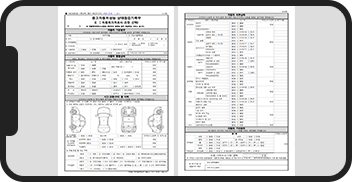
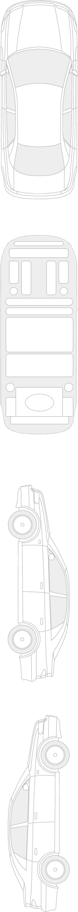

KB진단(비대면) 신청
KB진단(비대면)은 영상 촬영 없이, 온라인 신청 후
일반광고 상단에 진단차로 노출되는 광고입니다.
-
1단계
딜러 차량 정보 확인, KB진단(비대면) 신청 접수
-
2단계
관리자 신청 내용 검수 및 승인
-
3단계
진단 광고 노출
진단 대상차량 정보확인
- 진단 등록 완료시 일부 정보 수정에 제한이 있으니, 정확한 정보를 확인해 주세요.
57가4791

옵션
-
외장 (11)
썬루프 일반, 제논라이트(HID), 알루미늄휠, 전동접이식미러, 주간주행등(DLR), 루프랙, LED리어램프, 하이빔
-
내장 (13)
열선시트 (앞좌석 뒷좌석), 통풍시트 (운전석, 동승석), 파워핸들, 가죽시트 전동시트 운전석 동승석 뒷좌석전동시트 메모리시트 (운전석), 슈퍼비전계기판 패들시프트 하이패스 통풍시트(뒷좌석)
-
안전 (13)
주차감지센서 전방 후방 사이드&커튼에어백 에어백 운전석 동승석 후방카메라 어라운드뷰 블랙박스 ABS ECS TCS 차체자세제어장치 차선이탈경보장치 도난경보기 타이어 공기압감지 무릎에어백 전방카메라 자동긴급제동(AEB)
-
편의 (9)
스마트키 파워윈도우 자동도어잠금 풀오토에어컨 오토라이트 자동주차시스템 전자식파킹브레이크 HUD ECM룸밀러 크루즈컨트롤 전동트렁크 핸들열선 무선도어 잠금장치 레인센서와이퍼 스탑앤고 무선충전
-
멀티미디어 (5)
내비게이션 (순정), CD플레이어 CD체인저 스마트폰미러링, 블루투스
성능점검기록부 등록
- 1. 자동차 기본정보 & 종합상태 사고·교환·수리등 이력 & 자동차 세부상태 & 기타정보
-
여백없이 왜곡이 발생하지 않도록
사진을 찍어주세요
- 2. 유의사항 & 점검 장면 촬영 사진, 서명
-
여백없이 왜곡이 발생하지 않도록
사진을 찍어주세요
- 3. 중고차 성능점검 상태 보증서
-
여백없이 왜곡이 발생하지 않도록
사진을 찍어주세요
사고 교환 수리 등 이력
프레임 및 외부패널 진단
교환, 판금 등 이상 부위
※ 3판 이상 선택될 경우 진단차량 등록이 불가능합니다.
※ 부위를 선택하지 않을 경우 정상으로 저장됩니다.
교환
부식
판금/용접
흠집
요철
손상
※ 하단 항목은 승용차 기준이며, 기타 자동차는 승용차에 준하여 표시
- 주요골격부위
-
1 8 129 15 16 17 18 19 20 21 22 23 24 25 26 33 34 35 36 372 4 6 10 13 27 29 313 5 7 11 28 30 32 34
- 외판부위 1랭크
-
1 후드2 프론트휀더(좌)3 프론트휀더(우)4 프론트도어(좌)5 프론트도어(우)6 리어도어(좌)7 리어도어(우)후드8 트렁크리드9 라디에어터서포트 (볼트체결부품)
- 외판부위 2랭크
-
10 쿼터패널(좌)11 쿼터패널(우)12 루프패널13 사이드실패널(좌)14 사이드실패널(우)
- 주요골격 A랭크
-
15 프론트패널16 크로스멤버17 인사이드패널(앞)(좌)18 인사이드패널(앞)(우)35 트렁크플로어36 리어패널
- 주요골격 B랭크
-
19 사이드멤버(뒤)(좌)20 사이드멤버(뒤)(우)21 사이드멤버(앞)(좌)22 사이드멤버(앞)(우)23 프론트 휠하우스(좌)24 프론트 휠하우스(우)25 리어 휠하우스(좌)26 리어 휠하우스(우)27 필러패널(앞)(좌)28 필러패널(앞)(우)29 필러패널(중)(좌)30 필러패널(중)(우)31 필러패널(뒤)(좌)32 필러패널(뒤)(우)37 패키지트레이
- 주요골격 C랭크
-
33 대쉬패널34 플로어패널
진단코멘트
(0/30)
진단비용
(베타서비스기간)
무료
KB진단서비스 이용 시 주의사항 안내
- KB진단은 차량의 사고유무에 대해서만 점검하며 신청차량에 대한 정보 오류에 대해서는 입력한 딜러의 책임입니다.
- KB진단광고를 위해 만들어진 동영상, 사진, 컨텐츠에 대한 권한은 KB캐피탈㈜에 있으며, KB캐피탈㈜의 허가없이 사용할 수 없습니다.
- KB진단 광고 등록 차량에 다음과 같은 사유 발생시 광고 중단 및 강제 삭제 처리 될 수 있으며, 진단 광고 시 발생한 비용에 대해 환불 되지 않습니다.
- ① 차량 소유주의 요청이 있는 경우
- ② 판매 불가 상태의 차량으로 확인 된 경우
(소속조합 미 제시차량, 판매 후 방치 등) - ③ 등록한 차량 정보가 실제 정보와 상이한 경우
- ④ 관리자가 정상 거래 불가한 차량이라 판단한 경우